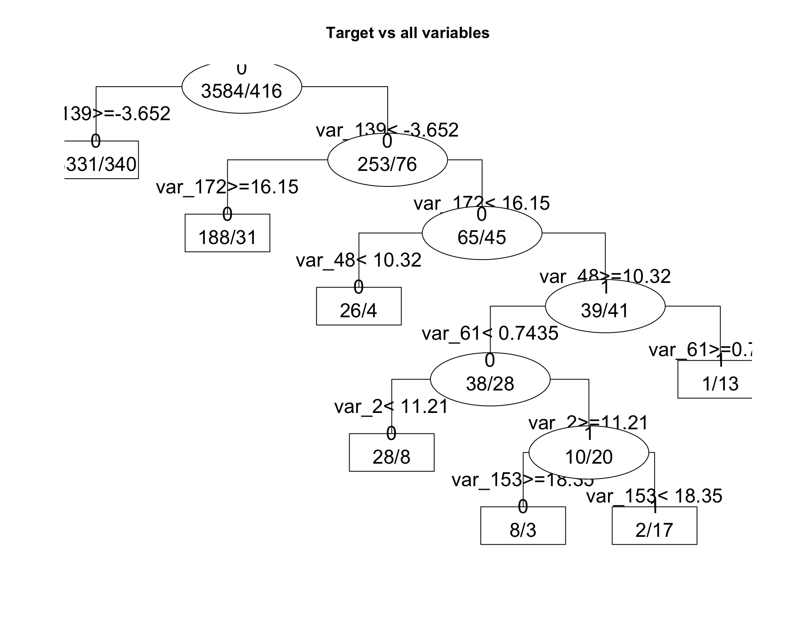

Santander Costumer Transaction Prediction
2019-03-20
0.1 Load packages
1 Data glimpse
path_to_train <- "train.csv"
train <- read.csv(file = path_to_train)
train[1:10,1:14] %>%
mutate(target = as.factor(target))## ID_code target var_0 var_1 var_2 var_3 var_4 var_5 var_6
## 1 train_0 0 8.9255 -6.7863 11.9081 5.0930 11.4607 -9.2834 5.1187
## 2 train_1 0 11.5006 -4.1473 13.8588 5.3890 12.3622 7.0433 5.6208
## 3 train_2 0 8.6093 -2.7457 12.0805 7.8928 10.5825 -9.0837 6.9427
## 4 train_3 0 11.0604 -2.1518 8.9522 7.1957 12.5846 -1.8361 5.8428
## 5 train_4 0 9.8369 -1.4834 12.8746 6.6375 12.2772 2.4486 5.9405
## 6 train_5 0 11.4763 -2.3182 12.6080 8.6264 10.9621 3.5609 4.5322
## 7 train_6 0 11.8091 -0.0832 9.3494 4.2916 11.1355 -8.0198 6.1961
## 8 train_7 0 13.5580 -7.9881 13.8776 7.5985 8.6543 0.8310 5.6890
## 9 train_8 0 16.1071 2.4426 13.9307 5.6327 8.8014 6.1630 4.4514
## 10 train_9 0 12.5088 1.9743 8.8960 5.4508 13.6043 -16.2859 6.0637
## var_7 var_8 var_9 var_10 var_11
## 1 18.6266 -4.9200 5.7470 2.9252 3.1821
## 2 16.5338 3.1468 8.0851 -0.4032 8.0585
## 3 14.6155 -4.9193 5.9525 -0.3249 -11.2648
## 4 14.9250 -5.8609 8.2450 2.3061 2.8102
## 5 19.2514 6.2654 7.6784 -9.4458 -12.1419
## 6 15.2255 3.5855 5.9790 0.8010 -0.6192
## 7 12.0771 -4.3781 7.9232 -5.1288 -7.5271
## 8 22.3262 5.0647 7.1971 1.4532 -6.7033
## 9 10.1854 -3.1882 9.0827 0.9501 1.7982
## 10 16.8410 0.1287 7.9682 0.8787 3.0537- The dataset consists of 200 variables labeled var_n (n 1:200),
- A column named
targetlogical value (0,1), which 1 corresponds to a costumers that get transaction and 0, as No. - ID_code corresponds to the ID of the costumers
test <- read.csv((file = "test.csv"))
test[1:10,1:14]## ID_code var_0 var_1 var_2 var_3 var_4 var_5 var_6 var_7
## 1 test_0 11.0656 7.7798 12.9536 9.4292 11.4327 -2.3805 5.8493 18.2675
## 2 test_1 8.5304 1.2543 11.3047 5.1858 9.1974 -4.0117 6.0196 18.6316
## 3 test_2 5.4827 -10.3581 10.1407 7.0479 10.2628 9.8052 4.8950 20.2537
## 4 test_3 8.5374 -1.3222 12.0220 6.5749 8.8458 3.1744 4.9397 20.5660
## 5 test_4 11.7058 -0.1327 14.1295 7.7506 9.1035 -8.5848 6.8595 10.6048
## 6 test_5 5.9862 -2.2913 8.6058 7.0685 14.2465 -8.6761 4.2467 14.7632
## 7 test_6 8.4624 -6.1065 7.3603 8.2627 12.0104 -7.2073 4.1670 13.0809
## 8 test_7 17.3035 -2.4212 13.3989 8.3998 11.0777 9.6449 5.9596 17.8477
## 9 test_8 6.9856 0.8402 13.7161 4.7749 8.6784 -13.7607 4.3386 14.5843
## 10 test_9 10.3811 -6.9348 14.6690 9.0941 11.9058 -10.8018 3.4508 20.2816
## var_8 var_9 var_10 var_11 var_12
## 1 2.1337 8.8100 -2.0248 -4.3554 13.9696
## 2 -4.4131 5.9739 -1.3809 -0.3310 14.1129
## 3 1.5233 8.3442 -4.7057 -3.0422 13.6751
## 4 3.3755 7.4578 0.0095 -5.0659 14.0526
## 5 2.9890 7.1437 5.1025 -3.2827 14.1013
## 6 1.8790 7.2842 -4.9194 -9.1869 14.0581
## 7 -4.3004 6.3181 3.3959 -2.0205 13.7682
## 8 -4.8068 7.4643 4.0355 1.6185 14.1455
## 9 2.5883 7.2215 9.3750 8.4046 14.3322
## 10 -1.4112 6.7401 0.3727 -4.1918 14.0862- The test dataset has the same shape than the train dataset minus target column.
- The goal is to predict
targetcolumn depending on 200 double values. - In the other hand split the dataset by condition if each costumer will get transaction (1) or not (0) depending on 200 variables
1.1 Correlation glimps of variables
cormat <- round(cor(train[, c(-1,-2)]),2)
cormat[1:9,1:15]## var_0 var_1 var_2 var_3 var_4 var_5 var_6 var_7 var_8 var_9 var_10
## var_0 1.00 0 0.01 0 0 0 0.01 0 0 0.00 0
## var_1 0.00 1 0.00 0 0 0 0.00 0 0 0.00 0
## var_2 0.01 0 1.00 0 0 0 0.00 0 0 0.00 0
## var_3 0.00 0 0.00 1 0 0 0.00 0 0 0.00 0
## var_4 0.00 0 0.00 0 1 0 0.00 0 0 0.00 0
## var_5 0.00 0 0.00 0 0 1 0.00 0 0 -0.01 0
## var_6 0.01 0 0.00 0 0 0 1.00 0 0 -0.01 0
## var_7 0.00 0 0.00 0 0 0 0.00 1 0 0.00 0
## var_8 0.00 0 0.00 0 0 0 0.00 0 1 0.00 0
## var_11 var_12 var_13 var_14
## var_0 0.00 0 0.00 0
## var_1 0.00 0 0.00 0
## var_2 0.01 0 -0.01 0
## var_3 0.00 0 -0.01 0
## var_4 0.00 0 0.00 0
## var_5 0.00 0 0.00 0
## var_6 0.00 0 -0.01 0
## var_7 0.00 0 0.00 0
## var_8 0.00 0 0.00 0melted_cormat <- melt(cormat)
head(melted_cormat)## Var1 Var2 value
## 1 var_0 var_0 1.00
## 2 var_1 var_0 0.00
## 3 var_2 var_0 0.01
## 4 var_3 var_0 0.00
## 5 var_4 var_0 0.00
## 6 var_5 var_0 0.00ggplot(data = melted_cormat, aes(x=Var1, y=Var2, fill=value)) +
geom_tile()We did not find any particular correlation.
target_corr = abs(cor(train[,c(-1)])['target',])
target_corr %>%
as.data.frame() %>%
tibble::rownames_to_column() %>%
arrange(desc(target_corr)) %>%
rename(Vairable = "rowname", Correlation = ".") %>%
head()## Vairable Correlation
## 1 target 1.00000000
## 2 var_81 0.08091733
## 3 var_139 0.07407963
## 4 var_12 0.06948928
## 5 var_6 0.06673085
## 6 var_110 0.06427530- As you can see, the most correlated one is the Variable 81, then comes the Variable 139 and so on. But it remains negligible to consider.
- Let’s take a look at the plot of the target variable against the Variable 81.
train %>%
mutate(target = as.factor(target)) %>%
group_by(target) %>%
ggplot(aes(x = target)) +
geom_boxplot(aes( y = var_81, color= target))#plot(train$var_81, y = train$target)- Apparently There is no a significant difference between var_81(0) and var_81(1).
1.2 chisq.test
chisq.test(table(train[,c("target", "var_81")]))## Warning in chisq.test(table(train[, c("target", "var_81")])): Chi-squared
## approximation may be incorrect##
## Pearson's Chi-squared test
##
## data: table(train[, c("target", "var_81")])
## X-squared = 84321, df = 79064, p-value < 2.2e-16- A very low p-value means a very strong difference from the uncorrelated case. As usual in the hypothesis tests, you don’t actually accept the null hypothesis, but refuse to neglect it.
- We can get further confirmation by taking a look at the contingency table:
summary(table(train[,c("var_81", "target")]))## Number of cases in table: 200000
## Number of factors: 2
## Test for independence of all factors:
## Chisq = 84321, df = 79064, p-value = 1.341e-38
## Chi-squared approximation may be incorrect- Exactly what we expected.
- Conclusion:
Var_81andtargetstatute are independent. We suppose that all the other variables are also independent.
2 Split dataset by condition [Recursive partitioning][https://en.wikipedia.org/wiki/Recursive_partitioning]
The idea is to built a collection of variables with thresholds (pattern) that split dataset (parent) into sons (0,1).
The root of the model is a threshold of a variable that splits the dataset into two biggest groups. The data is separated by the first important variable, and then this process is applied separately to each sub-group, and so on recursively until the subgroups either reach a minimum size or until no improvement can be made.
get_tree <- function(dataset, n_sample, plot= FALSE){
# random sampling of 5000 costumers
s <- sample(nrow(dataset), size = n_sample, replace=FALSE)
# test idea with sub-dataset
sub_data <- dataset[s,]
sub_data <- sub_data %>%
mutate(target = as.factor(target))
frmla <- paste0("target", "~.", sep="")
frmla <- as.formula(frmla)
#ptm <- proc.time()
fit <- rpart::rpart(frmla, method = "class", sub_data[,-1])
#print(proc.time() - ptm)
if(plot == TRUE){
#rpart.plot(fit, type = 3, extra = 0, box.palette = "Grays", roundint = FALSE)
plot(fit, uniform=TRUE, compress=TRUE, margin=0.01, main= paste("Target vs all variables" ))#,
#control = rpart.control(minsplit = 1, minbucket = 1, cp = 0.01))
text(fit, use.n=TRUE, all=TRUE, cex=1.5, fancy=TRUE)
}
return(fit)
}
set.seed(1)
get_tree(dataset = train, n_sample = 5000, plot = FALSE)## n= 5000
##
## node), split, n, loss, yval, (yprob)
## * denotes terminal node
##
## 1) root 5000 508 0 (0.8984000 0.1016000) *The error message indicates that the formula used here can not split the dataset in sub-groups.
We tried several sample size and note that it is working if sample not exceed 4000.
set.seed(726)
fit1 <- get_tree(dataset = train, n_sample = 4000, plot= TRUE)** Interpretation** * The resulting models can be represented as binary trees with variables profiles threshold (var_13 > 0.204). * Each node is a class. The ratio in each node is the proportion of the number of costumers by class (1/0). * Each edge is a split condition of selected variable in branch. * The root of the tree is the best variable divisor of classes.
The goal is to predict which variables thresholds combination (var_13 > 0.2 + var_109 < 12 + var_111 > 7.79) lead to 3/12 of `1.
- In this run we have 7 + 3 + 5 + 6 costumers that did transaction.
set.seed(323)
fit2 <- get_tree(dataset = train, n_sample = 4000, plot = TRUE)
The order and the importance of variables change through runs. Based on the assumption that we can not run rpart model on all training dataset, we will loop several runs to get more idea about variable importance and thresholds.
2.1 Variable Importance
The output of get_tree returns the score of the best variables ranked by importance.
2.2 Prediction and Evaluation
prediction <- predict(fit2, test, type = "class")
table(prediction, train$target)##
## prediction 0 1
## 0 178551 19958
## 1 1351 140#OneR::eval_model(prediction, train)2.3 Capture Features of the model
capture_thresholds <- function(fit_model){
if("variable.importance" %in% names(fit_model)){
var_importance <- fit_model["variable.importance"] %>%
as.data.frame() %>%
tibble::rownames_to_column()
colnames(var_importance) <- c("Variable","Score")
fit_text <- capture.output(print(fit_model))
Nodes <- str_match(fit_text, "var.*(\\d)\\s\\(")[,2] %>%
na.omit() %>%
as.data.frame
colnames(Nodes) <- "Node"
Variable <- stringr::str_match(fit_text, "var_\\d*") %>%
na.omit() %>%
as.data.frame() %>%
dplyr::rename(Variable = V1) %>%
mutate(Variable = as.character(Variable))
tmp <- str_match(fit_text, "[=,<,>][=,>,<]?\\s?-?\\d\\d?\\.\\d*") %>%
str_split(pattern = "(?=[<,>, >=])", simplify = TRUE) %>%
as.data.frame() %>%
mutate(Value = str_remove(V3, "=?")) %>%
na.omit() %>%
mutate(Value = as.numeric(Value)) %>%
mutate(Operator = V2) %>%
select(Operator, Value)
Thresholds <- cbind(Variable, tmp, Nodes)
fit_features <- dplyr::right_join(var_importance, Thresholds, by ="Variable")
####### Add features from rpart.utils::rpart.subrules.table
join_features <-
rpart.utils::rpart.subrules.table(fit_model) %>%
mutate(Value = as.double(as.character(Value))) %>%
mutate(Less = as.double(as.character(Less))) %>%
mutate(Greater = as.double(as.character(Greater))) %>%
mutate(Value = coalesce(Less, Greater)) %>%
mutate(Variable = as.character(Variable)) %>%
right_join(fit_features, by= c("Variable", "Value")) %>%
tidyr::drop_na(Node) %>%
filter(!is.na(Greater) & Operator == ">" | !is.na(Less) & Operator == "<")
return(join_features)
}else{}
}
capture_thresholds(fit2)## Subrule Variable Value Less Greater Score Operator Node
## 1 L1 var_139 -3.65155 NA -3.65155 13.719459 > 0
## 2 R1 var_139 -3.65155 -3.65155 NA 13.719459 < 0
## 3 L2 var_172 16.14790 NA 16.14790 10.481976 > 0
## 4 R2 var_172 16.14790 16.14790 NA 10.481976 < 0
## 5 L3 var_48 10.32075 10.32075 NA 6.273485 < 0
## 6 R3 var_48 10.32075 NA 10.32075 6.273485 > 1
## 7 L4 var_61 0.74355 0.74355 NA 6.542468 < 0
## 8 L5 var_2 11.20965 11.20965 NA 6.464646 < 0
## 9 R5 var_2 11.20965 NA 11.20965 6.464646 > 1
## 10 L6 var_153 18.34860 NA 18.34860 5.390750 > 0
## 11 R6 var_153 18.34860 18.34860 NA 5.390750 < 1
## 12 R4 var_61 0.74355 NA 0.74355 6.542468 > 12.4 Capture Features for a list of models
## Loop to run get_tree
mdl <- NULL
for(i in 1:20){
v <- sample(1:1000, size= 1, replace=FALSE)
set.seed(v)
mdl[[i]] <- get_tree(dataset = train, n_sample = 3500)
}
tbl<- lapply(mdl, function(x)
if("variable.importance" %in% names(x)){
capture_thresholds(x)
}else{}
)
tbl <- rlist::list.clean(tbl)
length(tbl)## [1] 14We run a loop for 20 fits. At the end we get 17 fits. The 3 remain run do not find classification.
2.5 Extract the best Variables by median of Scores based on multiple models
best_var <- do.call(rbind, tbl) %>%
group_by(Variable) %>%
summarise(mScore = median(Score)) %>%
arrange(desc(mScore))
head(best_var)## # A tibble: 6 x 2
## Variable mScore
## <chr> <dbl>
## 1 var_12 16.3
## 2 var_2 14.5
## 3 var_22 13.6
## 4 var_166 12.7
## 5 var_81 12.1
## 6 var_165 11.32.6 Use the best 74 variables for modeling
sub_train1 <- train %>%
select(ID_code, target, best_var$Variable)
set.seed(1321)
fit_74 <- get_tree(dataset = sub_train1, n_sample = 3500, plot= TRUE)
ptest <- predict(fit_74, test, type = "class")
table(ptest, train$target)##
## ptest 0 1
## 0 178335 19944
## 1 1567 154# predictions
pdata <- as.data.frame(predict(fit_74, newdata = test, type = "p"))
# confusion matrix
table(train$target, pdata$`1` > .8)##
## FALSE TRUE
## 0 178676 1226
## 1 19977 121